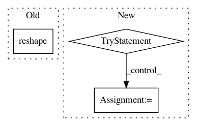

bdf67bc292175a81c63deca27a2056d566db050b,dipy/reconst/dti.py,,restore_fit_tensor,#Any#Any#Any#Any#Any#,1182
Before Change
// Finally, converge on some solution and use it:
this_dti = np.concatenate([np.ravel(x) for x in
decompose_tensor(
from_lower_triangular(this_tensor[:6]).reshape(3,3))])
dti_params[vox] = this_dti
After Change
"sigma", this_sigma))
// The parameters are the evals and the evecs:
try:
evals,evecs=decompose_tensor(from_lower_triangular(this_tensor[:6]))
dti_params[vox, :3] = evals
dti_params[vox, 3:] = evecs.ravel()
// If leastsq failed to converge and produced nans, we"ll resort to the
// OLS solution in this voxel:
except np.linalg.LinAlgError:
print(vox)
dti_params[vox, :] = start_params
dti_params.shape = data.shape[:-1] + (12,)
restore_params = dti_params
return restore_params
In pattern: SUPERPATTERN
Frequency: 3
Non-data size: 3
Instances
Project Name: nipy/dipy
Commit Name: bdf67bc292175a81c63deca27a2056d566db050b
Time: 2013-07-21
Author: arokem@gmail.com
File Name: dipy/reconst/dti.py
Class Name:
Method Name: restore_fit_tensor
Project Name: hyperspy/hyperspy
Commit Name: 5021639cc20b0756b2e817c31f6ac4095fca8db4
Time: 2015-07-21
Author: vidartf@gmail.com
File Name: hyperspy/_components/polynomial.py
Class Name: Polynomial
Method Name: estimate_parameters
Project Name: tensorly/tensorly
Commit Name: 9b8ad4977dd57c82b11145419ad4238cf9f7342e
Time: 2018-09-28
Author: jiminy.crist@gmail.com
File Name: tensorly/tests/test_backend.py
Class Name:
Method Name: test_set_backend